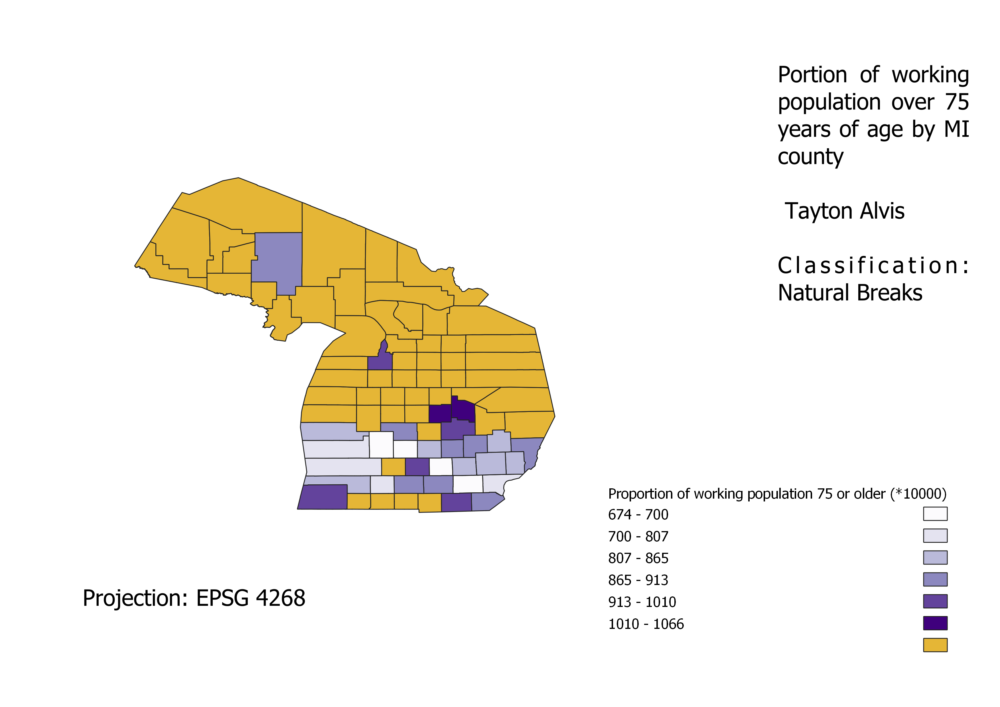
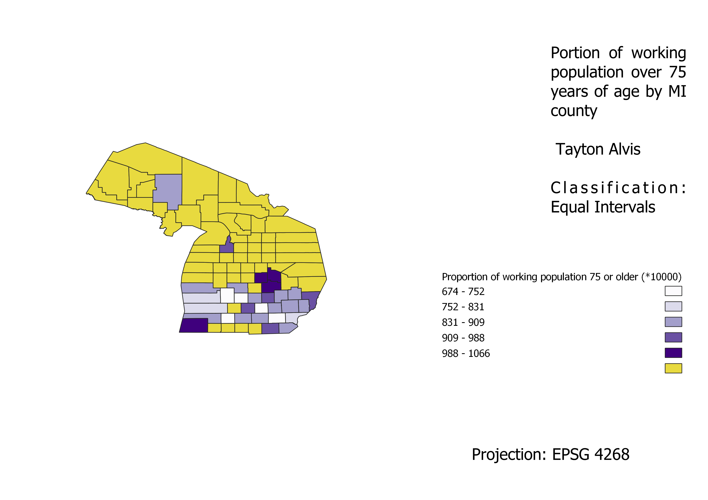

Homework 6.2: Ratio chloropleths of differing classification
Tayton Alvis
The following chloropleths were made using a ratio of people 75 or older in the workforce vs. total working population. Darker counties have a larger portion of workers 75 or older. Counties that were not surveyed are represented in yellow in order to preserve state shape.
Natural Breaks Chloropleth
The natural breaks classification scheme breaks the data into groups based on their numbers in relation to one another. This makes for a scheme in which similar value counties are grouped in the same break, and is therefore fairly accurate from a visual standpoint.

Equal Interval Chloropleth
This Chloropleth breaks the county data into equal interval groups, which can be fairly accurate. However, it can sometimes give the appearance of a more well distributed dataset than is occurring in actuality.

Quantile Chloropleth
This chloropleth breaks the data into quantiles based on number of points, where the first group of points will be designated the lightest color, ect. This setup is good for evenly distributed data, but will not account for steep differences such as outliers. For example, if the last 3 numbers in a dataset were 45, 46, and 174, they would all be assigned the same color despite the number 174 being much greater in value.
Data used for this project
CSV dataset
Link to shapefile